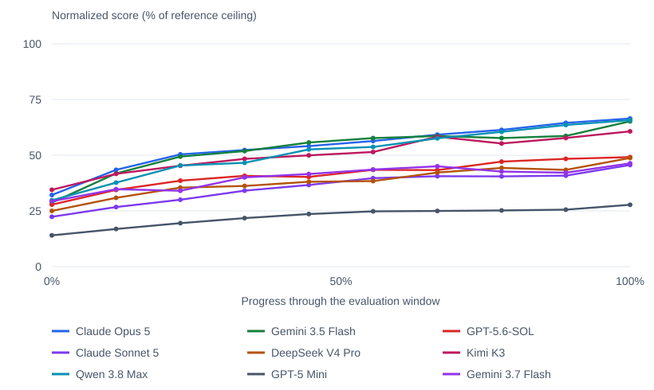
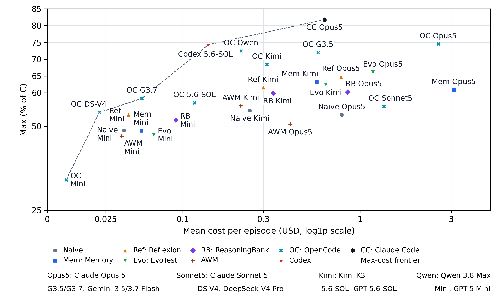

Discover, don't look up.
Novel, sometimes counterintuitive rules create unfamiliar situations. Agents see actions and feedback—not game source code or solutions.
Learning from experience in unfamiliar environments
How effectively can LLM agents learn from experience?
20 game templates with novel, hidden rules and seed-generated instances. Agents discover how each game works through interaction, then reuse their experience across episodes—without updating model weights.
Research snapshot · September 2026 · Game portal requires sign-in
Game examples
Choose a game, read the opening situation, and step through sample actions to see the feedback. These are recorded demonstrations—not a live game or a recommended strategy.
No action yetLoading…
All 20 previews use actual output from the black-box game interface. They show only short opening sequences, not complete solutions or model evaluation results. Use the game portal for live play; sign-in is required.
Results
Compare backbone models, self-evolving methods, and agent harnesses. Default ranking uses Max; learning gains and slopes are reported separately. Evaluation protocol
Average peak score across trials.
Average score across episodes.
Improvement from early to late episodes.
Fitted rate of score change across episodes.
| Rank | Model | Max ↑ | Mean ↑ | LG ↑ | LS ↑ |
|---|
Source: manuscript backbone/method and harness comparison tables · Updated September 29, 2026. Sorted highest first; equal displayed values share a rank. Highlighting marks the best value in each column. These are aggregate point estimates, not significance rankings. This leaderboard is a curated snapshot, not automatically updated.
Learning through repeated interaction
A peak score does not show the path to that score. These curves track normalized performance over the evaluation window across all 20 games.

Efficiency
Compare Max scores with estimated mean inference cost per episode. Points toward the upper left achieve higher performance at lower estimated cost.

How to read it. Each point is a model–method or model–harness configuration. The dashed line connects the performance–cost frontier: no other plotted configuration offers equal or better Max at equal or lower cost, with at least one strict improvement. The horizontal axis uses the paper's log1p scale, not a linear dollar scale.
Cost is estimated, not billed. Estimates use recorded token usage, reported or reconstructed cache reuse, and the paper's August 30, 2026 pricing snapshot. They are not current API prices or billing records. Configurations differ in model, method, or harness; this overview is not a compute-matched causal comparison.
Source: manuscript performance–cost figure and cost-estimation appendix. On small screens, swipe within the figure or open the full-size image.
Benchmark design
Strong task performance can reflect prior knowledge. Novel game rules let us examine how agents acquire and reuse knowledge through interaction.
Novel, sometimes counterintuitive rules create unfamiliar situations. Agents see actions and feedback—not game source code or solutions.
Agents play multiple episodes. Different methods retain past experience as full histories, reflections, rules, or workflows.
Fixed games repeat an instance. Re-shuffled games change its surface details while keeping the underlying rules the same.
Evaluation protocol
The current leaderboard uses one selected rule seed per game template and a protocol of 3 independent trials. It does not average over every possible seed.
We report 5 episodes for normal games and 10 for challenge games. Scores are normalized per game; challenge games receive weight 3 and normal games weight 1.
Max and Mean measure achieved performance; Learning Gain and Learning Slope measure improvement across episodes. None of these metrics alone establishes that an agent has discovered the correct rules. Interaction records provide complementary evidence. Backbone, method, and harness comparisons use separate groups; the performance–cost overview is not a compute-matched experiment.
Game collection
Each template defines a different task. Configurable seeds generate instances; agents must learn the hidden rules from available actions and feedback.
Cards describe game goals, not hidden solutions. The live portal may include additional or updated game variants.
Access and reproducibility
Browse the gameplay examples or try the games yourself. Evaluation results on this page are a curated research snapshot.
Try the interactive environments. Sign-in required.
Play the games ↗Explore real actions and game feedback for all 20 templates.
Browse examplesInspect the page and leaderboard snapshot. This is not the evaluation code.
View on GitHub ↗The manuscript and evaluation code are not linked here until a public release is available. A result-submission workflow and citation entry are not yet published on this site.